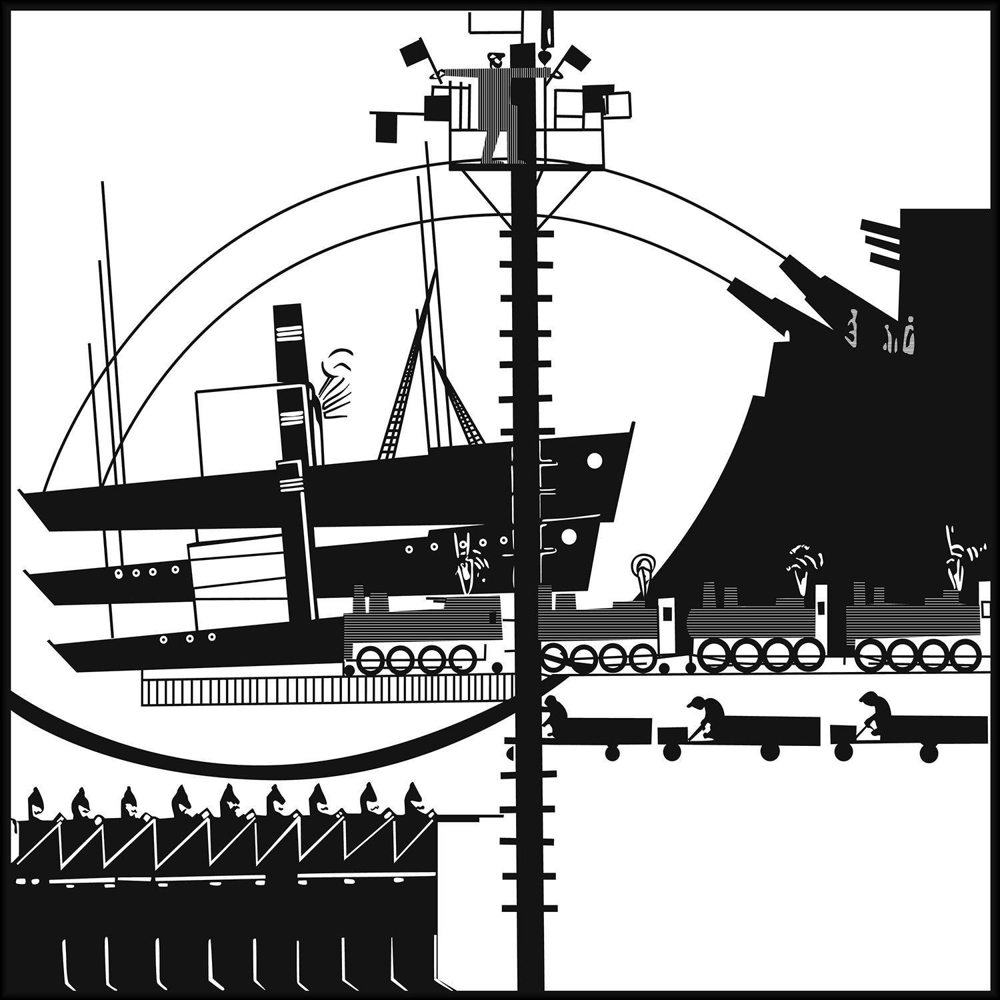

"A ghost never dies, it remains always to come and come-back."
Jacques Derrida, Specters of Marx, 2012.
When the wall fell and the Soviet Union collapsed, communism was pronounced dead and a new era of peace and prosperity was promised in the West. From Detroit to East Berlin, globalization left vacuums in post-industrial cities, creating moonscapes of urban decay and abandonment. Yet, these voids also created the conditions for an artistic explosion, as the surplus of cheap and abandoned housing provided sanctuary for young artists and served as an incubator for the development of new forms of art.
The end of the Cold War also collapsed spatial boundaries, allowing for new connections and solidarities. This included connections across the border where the Wall had formerly divided East and West Germany, but also across greater distances across the world as globalization eroded cultural divisions. These historical conditions of the early 90s led to the formation of new musical genres along with other art forms. In their record store in East Berlin, Moritz von Oswald and Mark Ernestus experimented with using the slowed, echoing warmth of Caribbean dub music’s analog spatial mixing techniques to reinterpret the fast-paced, synthetic futuristic sounds of Detroit techno music to create what would become known as dub techno. This was the beginning of a decades-long reciprocal flow of sound between European, American, and Caribbean artists that would lead to various collaborations such as Rhythm & Sound and Borderland.
This mix is intended to be a sonic palimpsest, a surface that has been continually written over, with traces always left behind. Across geographies and eras, we are haunted, both by nostalgia for pasts that we will never live, and by unrealized futures that were promised to us that have not come to pass. The future imagined when the wall fell looks nothing like the world we exist in today, which is somehow both more hopeless and more dull than the apocalyptic futures that were envisioned. Yet, just as when walking through a city you see traces of what came before if you know where and how to look, in the constantly mutating sonic environment of the internet, you can hear the ghosts of lost futures whisper if you are prepared to listen.

Illustration of Arseny Avramov's “The Symphony of Sirens” in Baku (1922)
In this mix, distorted remixes of twenty-first century cloud rap and pop music overlap with early experiments in industrial music, deconstructed club music, and late soviet-era shortwave radio broadcasts. Russian composer Arseny Avramov's Symphony of Factory Sirens can be heard throughout; standing atop a tower in Baku in 1922, Avramov conducted an entire city’s worth of sounds using two flags, with which he would signal the sirens of the new urban factories, as well as large choirs, brass bands, steam whistles, ship foghorns, heavy artillery, and aircraft buzzing overhead. While fascist futurist composers like Luigi Russolo would become more widely recognized for celebrating the everyday sounds of the new industrialized city, Avramov’s appreciation for urban noise was more democratic, as he invited workers to participate in the performance using their saws, sledgehammers, and grinders. These sounds and the futures that they envisioned loop in and out of veils of static, degrading and blending with the sonic artifacts of the present.
Nearly four decades after the wall fell, the future we were promised has not arrived, and we are no longer holding our breath. Still, by feeling sorrow for this loss and inviting ourselves to listen for its ghost, we refuse to allow that possibility of a better future to disappear from our world.